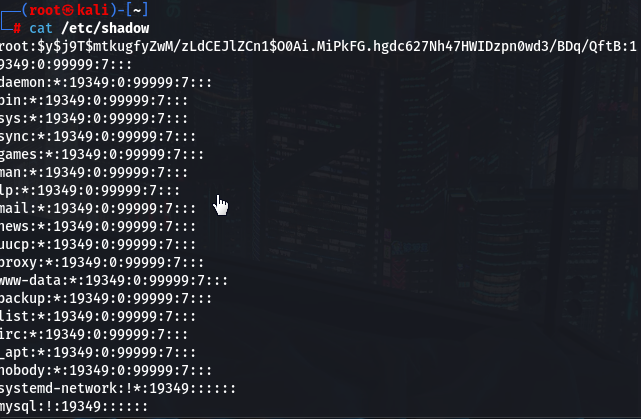

ls -la:
list list all.
it shows all the hidden files.

first letter:
d means directory
- means file
2,3,4 digits:
rwx: read wrtie excute
if readable, it'll show r, not readable, it'll show -
same for write and excute.
 , file or folder owner. ME
, file or folder owner. ME
 ,group owner.
,group owner.
 ,all users. BOB or CLAIR
,all users. BOB or CLAIR
change mode:


it changes all the users authorizations


add user: adduser

important file that we will be using frequently:
/etc/passwd
this file provides a place holder for a x.
for a different file called shadow file.
and you can see user's name, and their Uid from this folder.
root, that's ME, in group 0;
in the middle, they are just some system users
bob, that's the one I just added


shadow file:
it contains hash information,
you should never give access to.
later you can use x, and passwd and shadow file to crack it.
and it should be pretty easy.
you can use john or hash cat,
